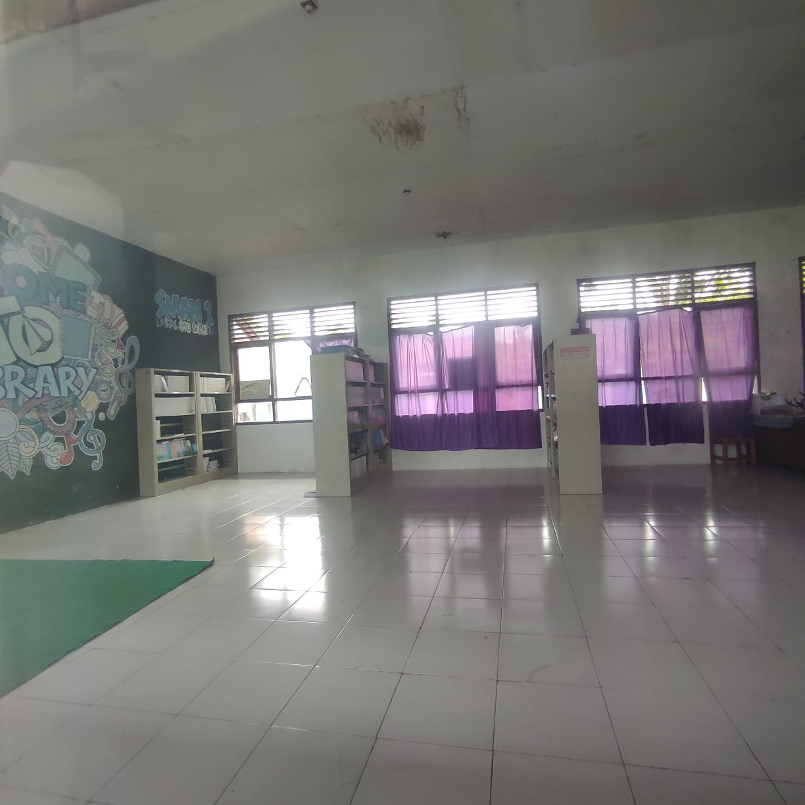

Perpustakaan SMAN 1 Lasalimu Selatan
Perpustakaan di SMAN 1 Lasalimu Selatan sudah menyediakan koleksi buku, majalah, dan sumber daya lainnya untuk tujuan membaca, penelitian, dan pendidikan. Perpustakaan SMAN 1 Lasalimu Selatan sudah dilengkapi dengan fasilitas nyaman seperti ruang baca, dan ruang diskusi. Di samping itu, banyak siswa-siswi yang mengadakan program-program edukatif, pelatihan, dan diskusi buku, untuk meningkatkan literasi dan minat baca. Dengan akses yang luas ke berbagai sumber informasi, perpustakaan disekolah ini memiliki peran penting dalam meningkatkan pengetahuan dan keterampilan individu serta memperkaya kehidupan sosial dan budaya.